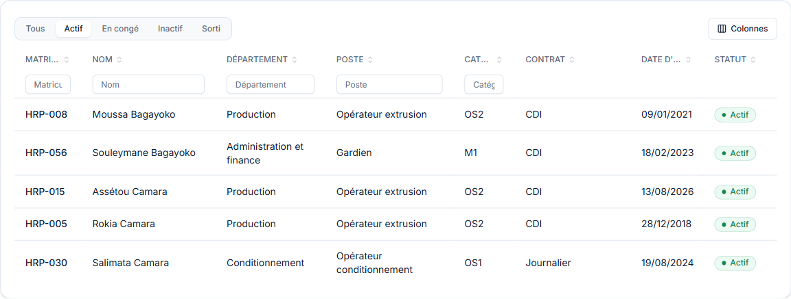
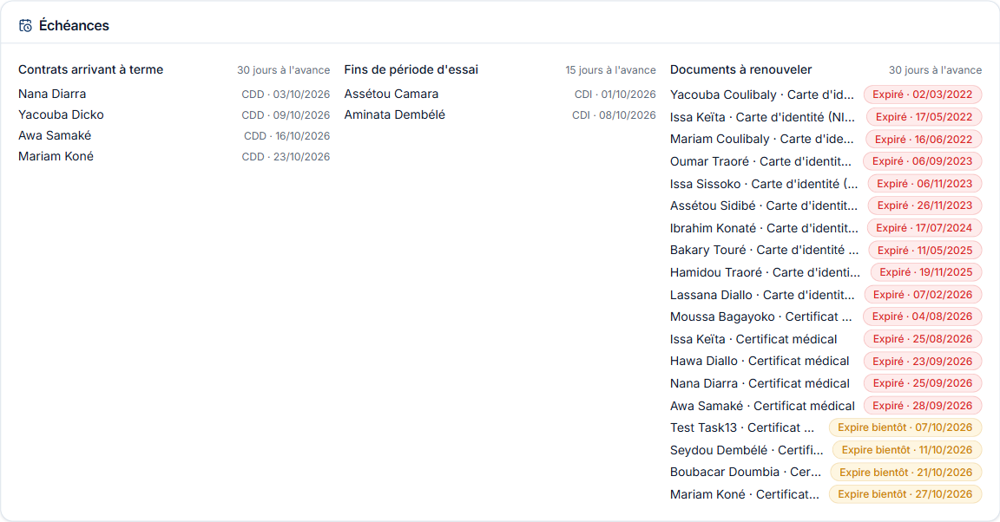
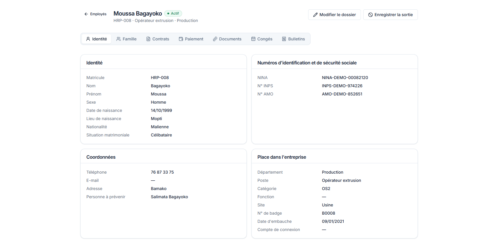
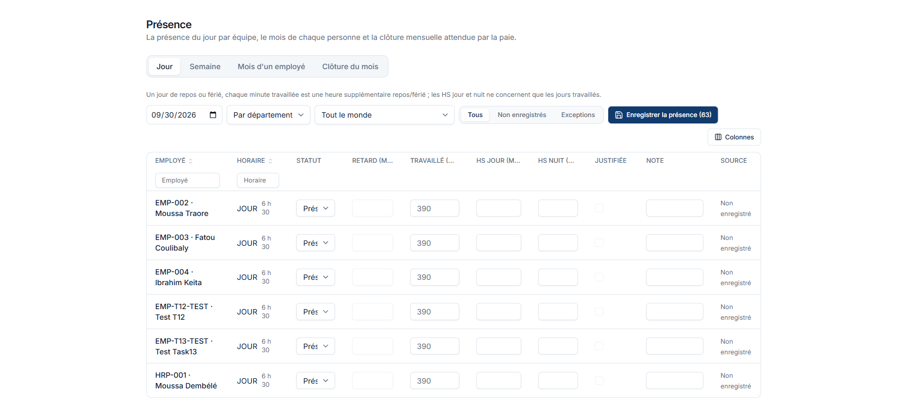
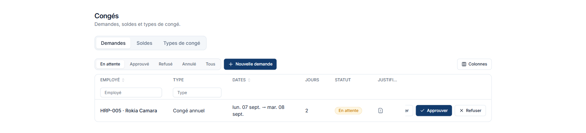

Ce guide montre comment retrouver un employé, comment lire son dossier,
comment surveiller les papiers qui expirent, comment noter les présences
et comment répondre à une demande de congé.
C'est le travail le plus fréquent : retrouver la fiche de quelqu'un.
Dans le menu à gauche : RESSOURCES HUMAINES → Employés

123
Les boutons Tous, Actif, En congé, Inactif, Sorti
trient la liste. Actif = les gens qui travaillent aujourd'hui.
Pour chercher quelqu'un, tapez son nom dans la case sous le mot NOM.
Vous pouvez aussi chercher par MATRICULE, par exemple HRP-008.
Chaque ligne est une personne : son matricule, son nom, son département,
son poste et son type de contrat.
C'est réussi quand…
La personne que vous cherchez apparaît sur une ligne du tableau.
Tâche 2
Surveiller les papiers qui expirent
Le programme prévient tout seul quand un contrat se termine
ou quand une carte d'identité n'est plus valable. À regarder chaque lundi.
Dans le menu à gauche : RESSOURCES HUMAINES → Employés

123
Contrats arrivant à terme : ces contrats se terminent bientôt.
Il faut les renouveler, ou prévenir la personne.
Fins de période d'essai : il faut décider si l'on garde la personne.
Les étiquettes rouges Expiré : le papier n'est plus valable du tout.
Les étiquettes oranges Expire bientôt : il reste peu de jours.
Attention
Une étiquette rouge veut dire que la date est déjà passée.
Commencez toujours par les rouges, puis les oranges.
C'est réussi quand…
Vous avez noté les noms en rouge, pour aller demander les papiers manquants.
Tâche 3
Ouvrir le dossier d'un employé
Le dossier contient tout ce que l'entreprise sait de la personne.
Dans le menu à gauche : RESSOURCES HUMAINES → Employés

123
Cliquez le nom de la personne dans la liste : son dossier s'ouvre.
En haut, son nom, son matricule, son poste et son département.
Le cadre Identité : sa date et son lieu de naissance, sa nationalité,
sa situation de famille.
Le cadre Numéros d'identification : ses numéros NINA,
INPS et AMO. Ce sont eux qui servent pour la paie
et pour la sécurité sociale.
C'est réussi quand…
Le nom de la personne s'affiche en grand, en haut de l'écran.
Tâche 4
Se déplacer dans les sept onglets du dossier
Le dossier est rangé en sept parties. Chaque onglet est une partie.
Dans le dossier d'un employé : la rangée de mots sous son nom.
1234
Identité et Famille : qui est la personne, et les personnes à sa charge.
Contrats : tous ses contrats, du plus ancien au plus récent.
Paiement : comment elle est payée. Documents : ses papiers scannés.
Congés : ses demandes de congé. Bulletins : ses fiches de paie.
Attention
Le bouton Enregistrer la sortie, en haut à droite, sert quand la personne
quitte l'entreprise pour de bon. Ne le cliquez jamais par curiosité.
C'est réussi quand…
Le contenu de l'écran change quand vous cliquez un autre onglet.
Tâche 5
Noter la présence du jour
C'est la présence notée ici qui sert à calculer la paie du mois.
Si elle est fausse, la paie sera fausse.
Dans le menu à gauche : RESSOURCES HUMAINES → Présence

123
Les onglets Jour, Semaine et Mois d'un employé
changent la façon de regarder. Commencez par Jour.
L'onglet Clôture du mois sert une seule fois par mois,
quand tout est noté et vérifié.
Le bouton Enregistrer la présence garde ce que vous avez saisi.
Le chiffre entre parenthèses dit combien de personnes sont concernées.
Attention
Notez la présence le jour même. Un oubli se voit dans le filtre
Non enregistrés, mais il fait attendre toute la paie du mois.
C'est réussi quand…
Plus personne n'apparaît dans le filtre Non enregistrés.
Tâche 6
Répondre à une demande de congé
Pour le chef : accepter ou refuser un congé demandé par un employé.
Dans le menu à gauche : RESSOURCES HUMAINES → Congés

123
Cliquez En attente : ce sont les demandes qui attendent votre réponse.
Pour accepter, cliquez Approuver sur la ligne de la personne.
Pour refuser, cliquez Refuser. Expliquez toujours pourquoi à la personne.
Attention
Regardez la colonne JUSTIFICATIF REQUIS avant d'approuver :
certains congés demandent un papier, par exemple un certificat du médecin.
C'est réussi quand…
La demande quitte la liste En attente, et son étiquette devient
Approuvé ou Refusé.